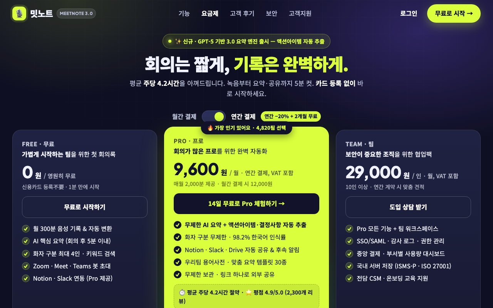

같은 브리프, 제로부터 — Muse 한 번 vs BrainSense 하네스
AI 회의록 SaaS의 가격 페이지 첫 화면. Free / Pro(월 12,000원) / Team 3단, Pro 강조, 신뢰 요소(고객 로고 자리, 환불 보장) 포함.
ui_score 0.617 → 0.617 (+0.000) · 3 rounds · 0/2 issues fixed
Muse 한 번 (r0)

ui 0.617 · 뇌 0.479 · 심사위원 0.75
물체 형태(LO)·움직임(MT) 반응이 낮음: 뚜렷한 사물 실루엣이 없는 텍스트 위주 화면 / 장소 영역(PPA)이 우세: 배경 풍경이 화면을 지배해 내용이 묻힘
BrainSense 하네스 (r0)
ui 0.617 · 뇌 0.479 · 심사위원 0.75 · 예쁨 상위 56% · 주목 상위 48%
물체 형태(LO)·움직임(MT) 반응이 낮음: 뚜렷한 사물 실루엣이 없는 텍스트 위주 화면 / 장소 영역(PPA)이 우세: 배경 풍경이 화면을 지배해 내용이 묻힘
문제 장부 (뇌가 연 이슈 → 해결 라운드)
| issue | opened | resolved | attempts | tried |
|---|
| 물체 형태(LO)·움직임(MT) 반응이 낮음: 뚜렷한 사물 실루엣이 없는 텍스트 위주 화면 | r0 | open | 3 | r2: 양옆 분산 오브젝트 제거하고 중앙 단일 도미넌트 녹음 디바이스 필(REC+파형+타이머+액션칩)과 단일 대각 모션빔, Pro카드 상단 디바이스 프레임으로 교체 / r3: 필( Pill) 대신 직사각형 디바이스 프레임(REC+타이머+파형바+액션자막) 단일 도미넌트 오브젝트와 단일 대각 라임 슬래시+모션 꼬리로 교체 |
| 장소 영역(PPA)이 우세: 배경 풍경이 화면을 지배해 내용이 묻힘 | r0 | open | 3 | r2: 그리드·3중 글로우 제거 후 단색 배경+솔리드 스테이지 패널에 카피 격리, 배경은 단일 희미 글로우만 유지 / r3: 그리드·3중 글로우 완전 제거, 단색 배경+솔리드 스테이지 패널에 카피 격리, 배경은 플랫 단일색만 유지 |
라운드별
| r | ui | 뇌 | 심사위원 | kept | changes | sourced photos |
|---|
| r0 | 0.617 | 0.479 | 0.75 | ✓ | | |
| r1 | 0.544 | 0.503 | 0.58 | · | Pro 카드 양옆에 실시간 파형·액션아이템 실루엣 오브젝트 2개와 대각 모션빔+사선 하이라이터 추가; 배경 그리드/그라데이션 단일 글로우로 축소하고 히어로+요금제를 솔리드 패널 위에 올려 전경 분리 | |
| r2 | 0.576 | 0.428 | 0.69 | · | 양옆 분산 오브젝트 제거하고 중앙 단일 도미넌트 녹음 디바이스 필(REC+파형+타이머+액션칩)과 단일 대각 모션빔, Pro카드 상단 디바이스 프; 그리드·3중 글로우 제거 후 단색 배경+솔리드 스테이지 패널에 카피 격리, 배경은 단일 희미 글로우만 유지; 고객로고 솔리드 흰색 뱃지화·별점 추가 및 100% 환불 원형 씰로 보장 강조 | |
| r3 | 0.580 | 0.479 | 0.67 | · | 필( Pill) 대신 직사각형 디바이스 프레임(REC+타이머+파형바+액션자막) 단일 도미넌트 오브젝트와 단일 대각 라임 슬래시+모션 꼬리로 교체; 그리드·3중 글로우 완전 제거, 단색 배경+솔리드 스테이지 패널에 카피 격리, 배경은 플랫 단일색만 유지 | |
사진 출처 (Wikimedia Commons, 무료 라이선스)